像素琢玉 · 阶段视觉对照
2026年11月15日。左侧使用仓库原始概念图，右侧为本轮运行截图。英文标注已中文化；画幅和功能适配的差异在每组下说明。
本阶段完成了玉文化内容扩展和一轮场景/UI细化。整屏95%相似度尚未验收；该页提供可检查的对照，不用测试数量替代视觉结论。完整复核记录 · 故事资料来源
工坊与三段侧栏
原图09 本轮游戏画面
本轮游戏画面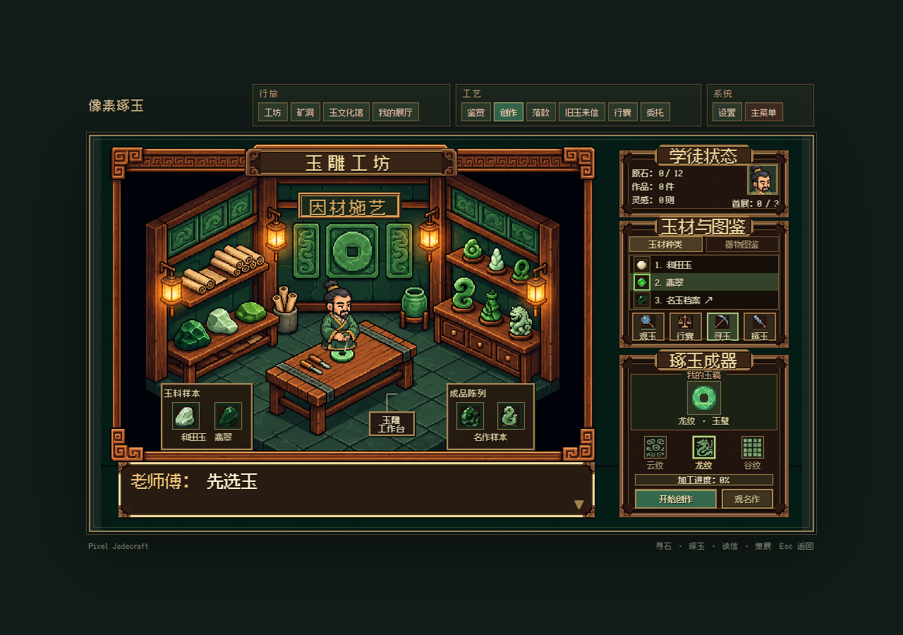
侧栏比例、单排四工具、铜角与标题端饰已调整。动态数据和按钮为真实交互；房间背景仍有透视、桌子比例差异，师傅使用局部接触动画。
矿洞：材质、接触动作与收起指引
原图01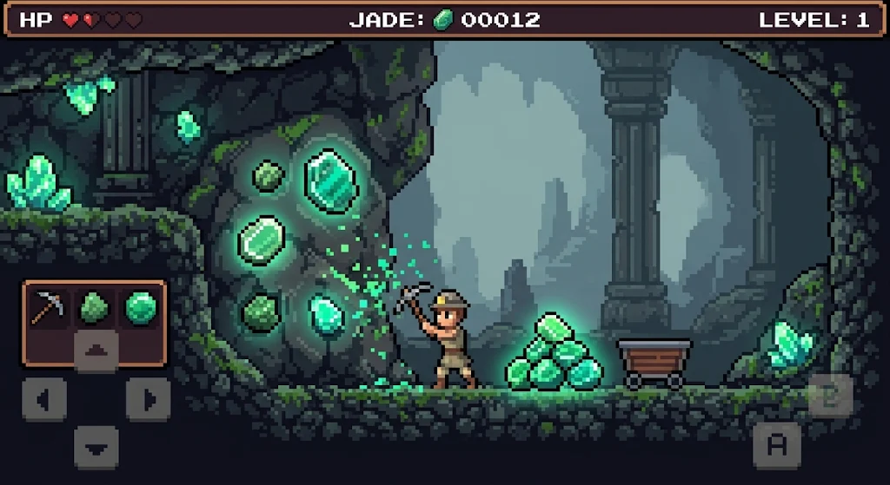
本轮真实取玉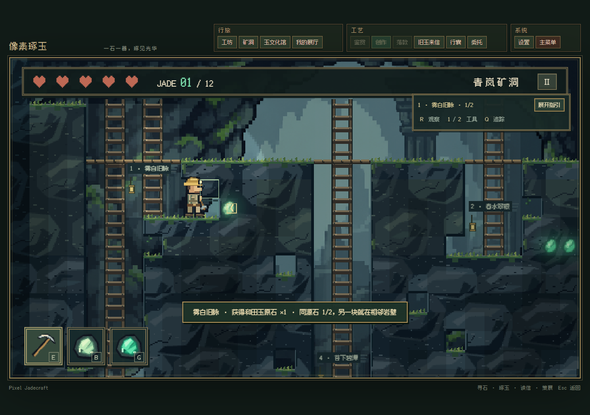
冷光、岩层、苔藓、木梯、矿车与挥镐已细化。当前仍是六簇梯井式矿区；本次阶段收尾后暂不继续入口大洞室改造。
文化馆：拱窗、展柜与人的故事
原图04（纵向多柜）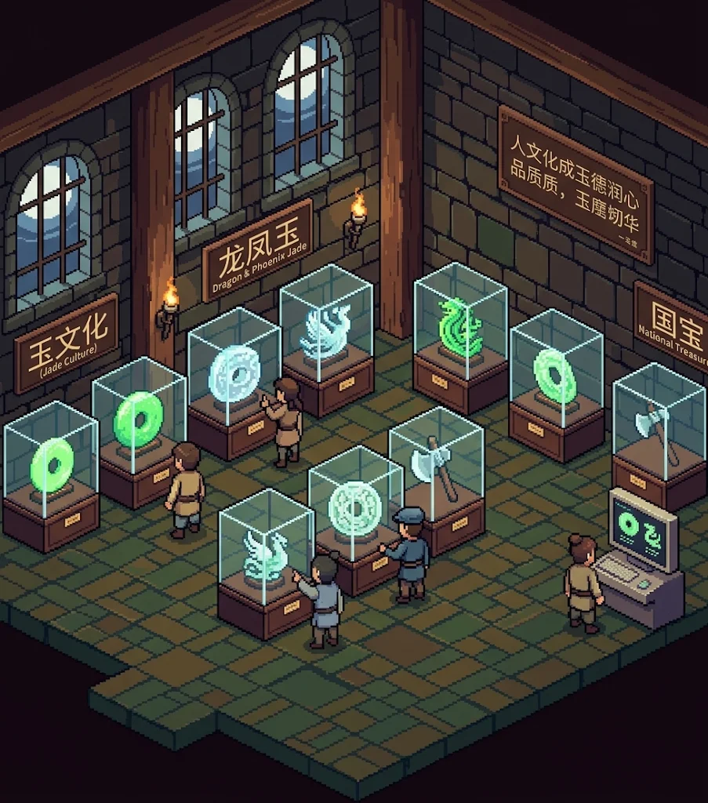
本轮文化馆（横向分页）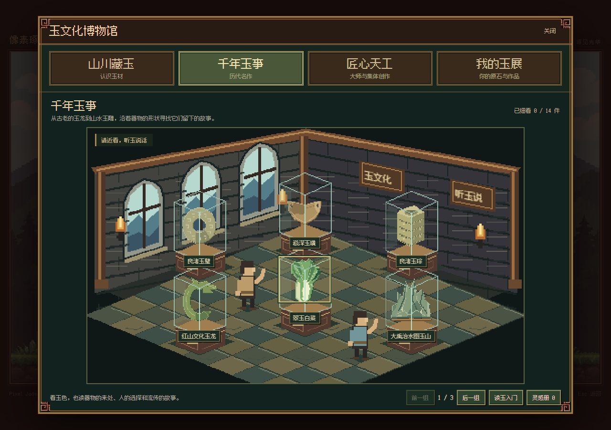
兽首玛瑙杯：故事与实际用途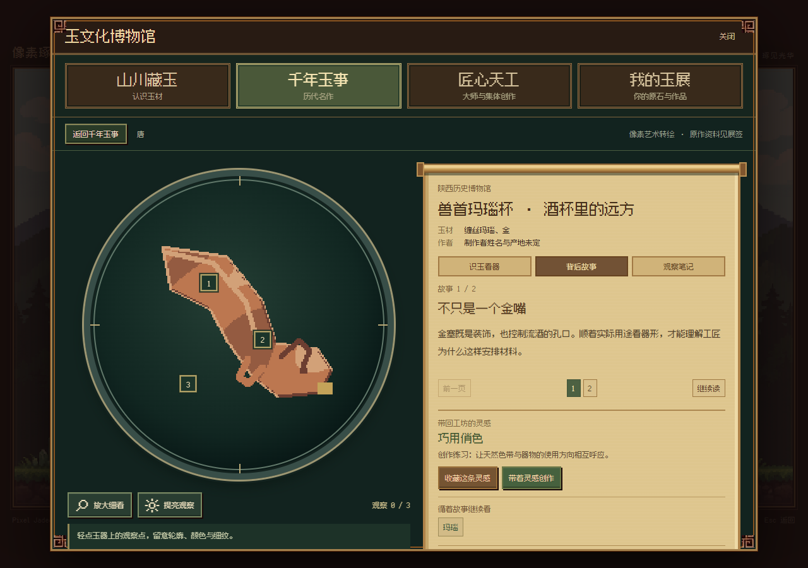
28件展品逐个可看，两页故事与来源可读。原图柜数和纵向构图未直接照搬，新增内容以六柜分页承载。
鉴赏：大圆镜与纸卷
原图05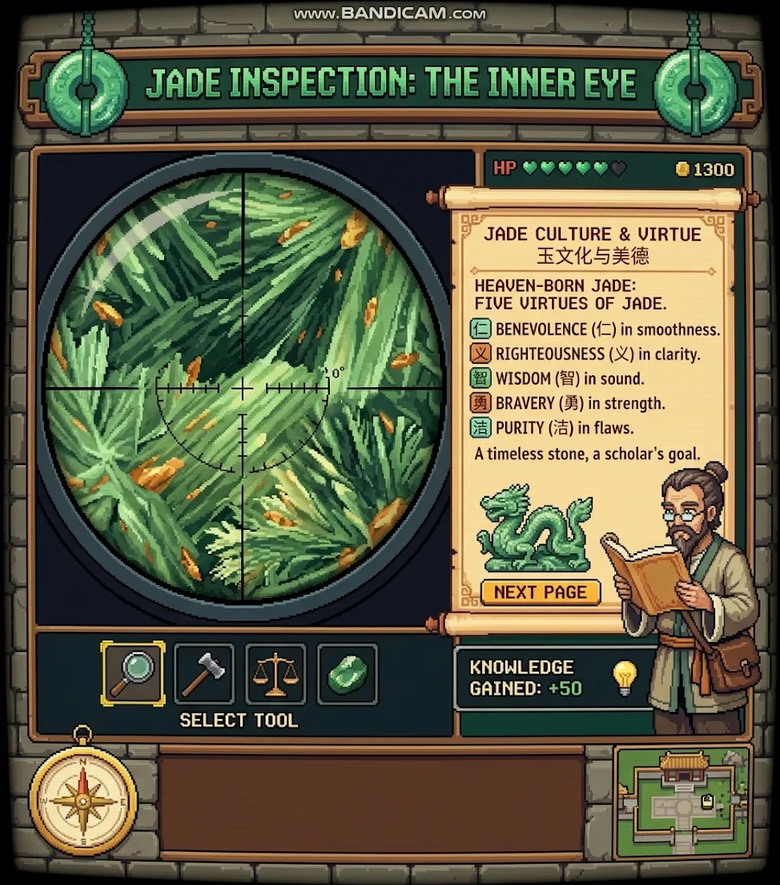
本轮鉴赏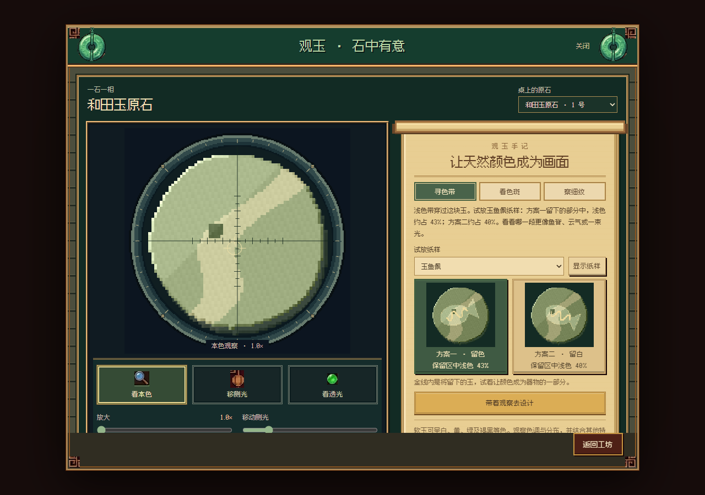
扩大观察镜，保留缩放、侧光、透光与纸样比较。采用横屏布局，未复制参考图中的虚构数值和水印。
落款：从表单到桌上作品
原图06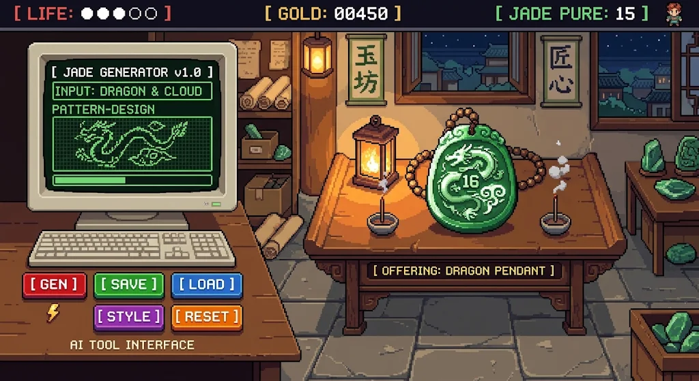
本轮落款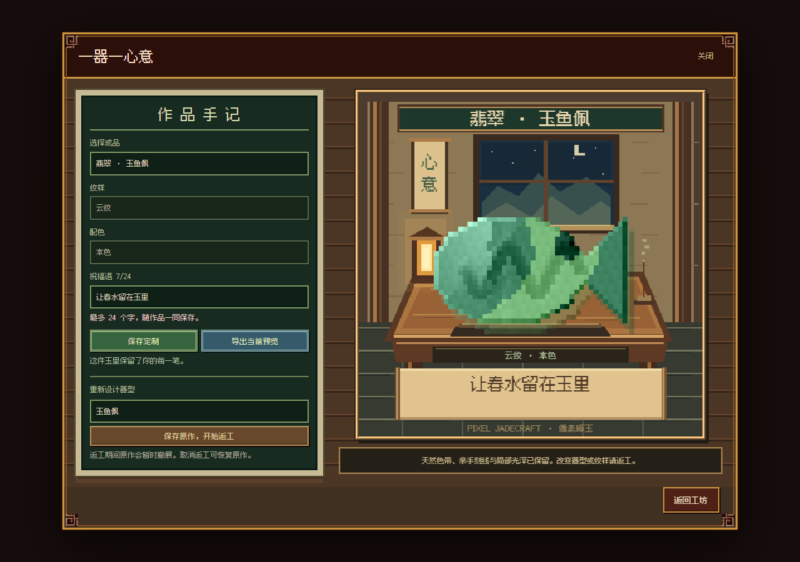
左侧控制与右侧大作品保持主次；灯笼、夜窗与桌座承载实际雕刻结果。PNG继续输出原480×480作品卡。
设置：五行控件与底部双按钮
原图08（右侧为设置参考）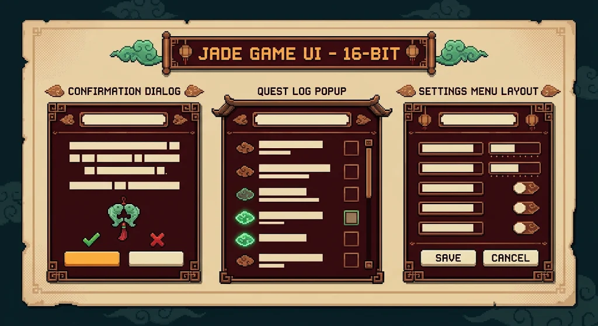
本轮设置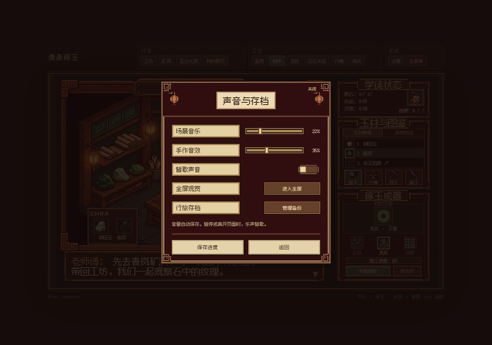
两行音量、静音、全屏、备份均对应实际功能；备份展开后保留导入导出与恢复。没有把功能不同的操作画成无作用开关。